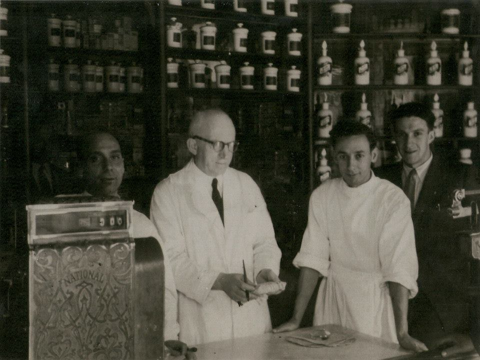
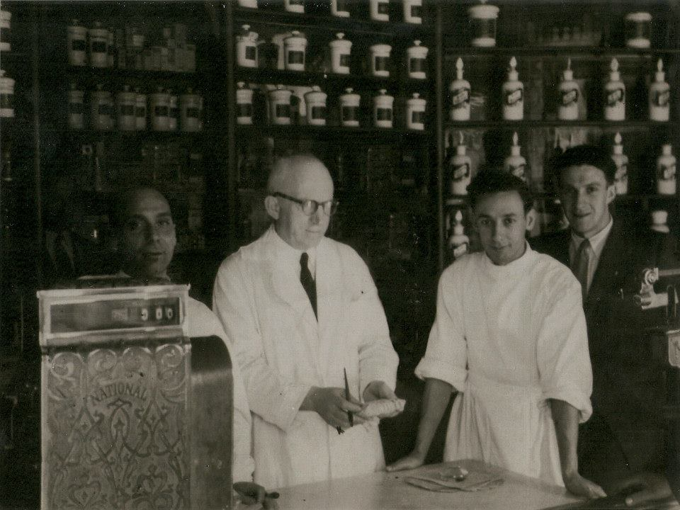
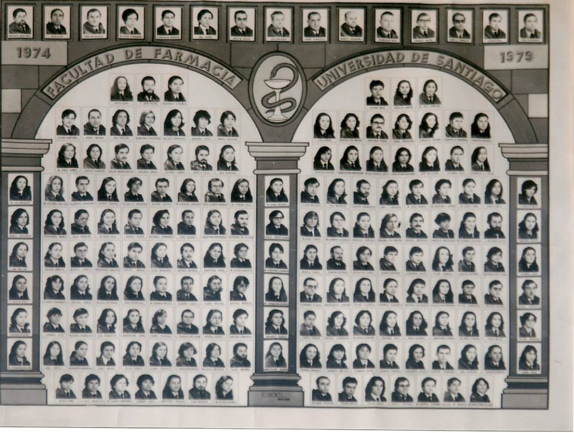

Principio
Somos un negocio familiar des de hace mas de 100 años el negocio fue fundada por Manuel Gonzalez Miranda
Somos un negocio familiar des de hace mas de 100 años el negocio fue fundada por Manuel Gonzalez Miranda

Manuel Gonzalez Miranda se licencio en farmacia a principios del siglo XX y fundó el negocio familiar.
Ramón Sobrino Llorca y Pilar Llorca Lopez se licenciaron en farmacia en el año 1979 y continuaron con el negocio.
Leticia Sobrino Llorca se licención en farmacia a principios en el año 2001 y continua con el negocio y lo va seguir haciendo por muchos años.